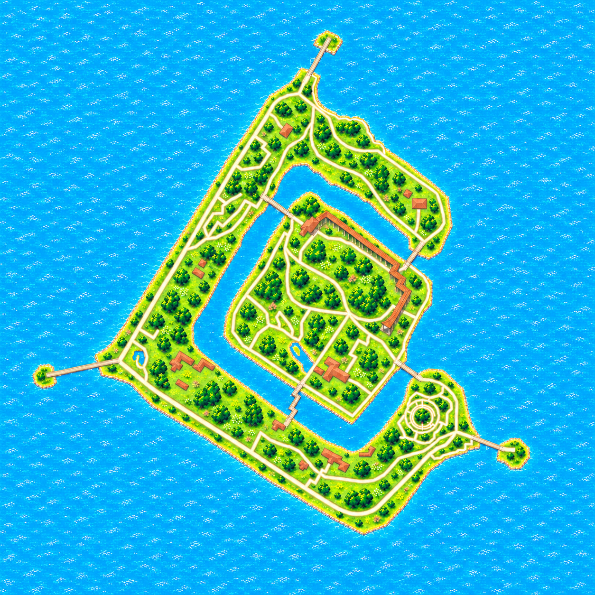
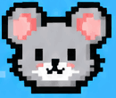

<!doctype html>
<html lang="zh-CN"><meta charset="utf-8"><meta name="viewport" content="width=device-width,initial-scale=1"><title>地图与右下角吸附 · 可操作预览</title><link rel="stylesheet" href="interactive.css">
<header class="previewBar"><strong>地图 · 可操作预览</strong><span>拖动 / 滚轮 / 双指；＋－缩放</span><button id="slow">慢放动效</button><a href="index.html">微信实截图</a></header>
<main id="phone" class="mapPage playPage">
 <div class="previewNav"><span>猫鼠行动</span><small>交互演示</small></div>
 <div class="mapCanvas" id="surface"><div id="scene" class="previewScene"><div class="previewPin" data-u=".5" data-v=".5"><span>● 本人</span></div><div class="previewPin allyPin" data-u=".55" data-v=".58"><span>● 队友</span></div><div class="previewPin venuePin" data-u=".4" data-v=".46"><span>● 集合点</span></div></div></div>
 <div class="playHud compactHud role-mouse"><div class="compactIdentity"><span class="roleName">鼠队</span><span class="phaseName">追逐中</span></div><span class="compactClock">04:45</span><div class="compactProgress"><span style="color:#e86522">1</span> / 4</div><span class="registrationState">OSM参考</span></div>
 <div class="mapTools"><button class="edgeButton locateButton" aria-label="回到本人位置" data-icon="locate"></button><button class="edgeButton layerButton" aria-label="地图图层" data-icon="layers"></button><div class="zoomControls"><button class="edgeButton zoomInButton" aria-label="放大地图" data-icon="plus"></button><button class="edgeButton zoomOutButton" aria-label="缩小地图" data-icon="minus"></button></div><button class="edgeButton pauseButton" aria-label="暂停演示" data-icon="pause"></button></div>
 <div class="actionDrawer trayOpen" id="tray"><button class="trayGrip" aria-label="收起操作面板"><span class="gripMark"></span></button><div class="trayActions"><button class="iconAction primaryAction mouseAction" data-icon="code" aria-label="动态码"></button><button class="iconAction teamAction" data-icon="team" aria-label="队伍"></button><button class="iconAction rulesAction" data-icon="rules" aria-label="规则"></button></div></div>
 <div class="collapsedDock dockHidden" id="dock" aria-hidden="true"><button class="dockGrip" aria-label="展开操作面板"><span class="gripMark"></span></button><button class="dockAction mouseAction" data-icon="code" aria-label="动态码" disabled></button></div>
 <dialog id="note"><p id="noteText"></p><button id="closeNote">关闭</button></dialog>
</main>
<footer><output id="readout"></output><p>使用与小程序相同的原画、相机算法和面板样式。位置为演示点；此页不登录、不读GPS、不连接对局。</p></footer>
<script>window.module={exports:{}};</script><script src="../../../utils/venue-camera.js"></script><script>window.VenueCamera=module.exports;</script><script src="interactive-glyphs.js"></script><script src="interactive.js"></script></html>
